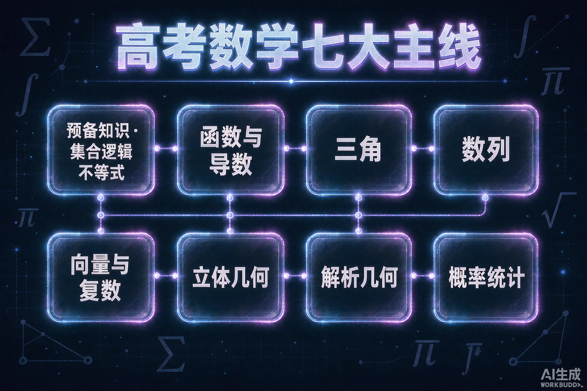
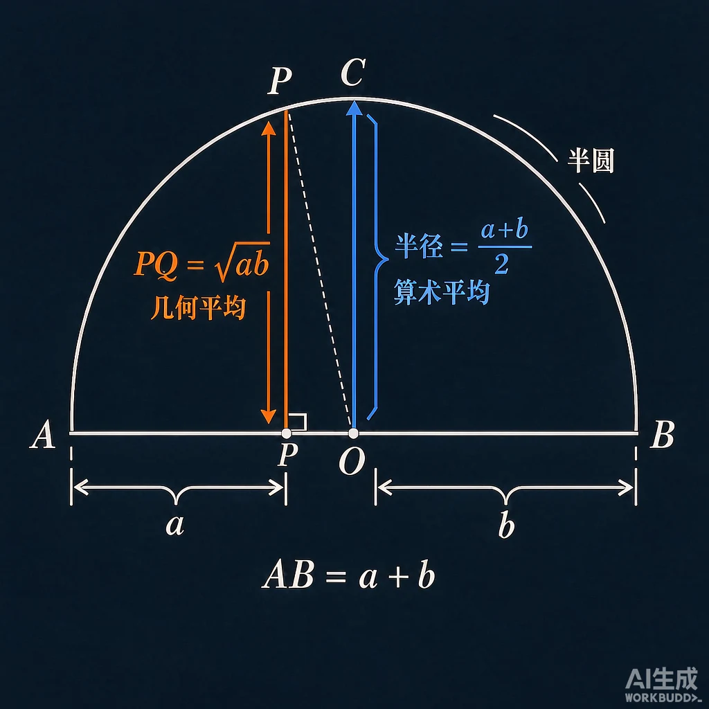
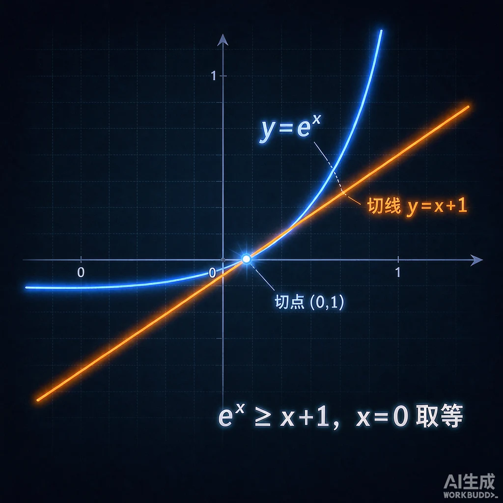

贵州 2027 · 新课标卷 ｜ 按知识相关性组织，由易到难，记记忆清单与推推导链双轨并行

选一个你最关心的问题，本课会围绕它展开。
选择或输入后，本课会围绕你的问题展开。
3 道题定位起点。错因诊断比对错更重要——它们全是高频易错点。
1. 等比数列求和公式 Sₙ=a₁(1−qⁿ)/(1−q) 的推导方法是？
2. cos(α+β) 展开后正确的是？
3. 已知 f(x+a)=−f(x)（a>0），则 f(x) 的周期为？
全卷底层语言，送分题必拿；不等式是函数与导数主线的工具库。
| 知识点 | 类型 | 内容与技巧 |
|---|---|---|
| 子集个数 | 推 | 2ⁿ：每个元素「选/不选」两种状态，乘法原理即得；真子集 −1，非空真子集 −2 |
| 德摩根律 | 记 | ∁(A∪B)=∁A∩∁B，口诀「补一进，交并互换」 |
| 量词否定 | 记 | ¬∀=∃¬，¬∃=∀¬：「∀∃ 互换，结论取反，条件不动」 |
| 一元二次不等式 | 记 | 开口向上时「大于取两边，小于取中间」 |
| 基本不等式 | 推 | a+b≥2√(ab) 由 (√a−√b)²≥0 展开；使用条件「一正、二定、三相等」 |
| 不等式链 | 推 | 「调和 ≤ 几何 ≤ 算术 ≤ 平方平均」，记「几算平」递增 |
拖动滑块改变 a 与 b 的分配，观察「弦高 ≤ 半径」：几何平均 ≤ 算术平均，当且仅当 a=b 取等。
算术平均 (a+b)/2 = 5.00 ｜ 几何平均 √(ab) = 4.58 ｜ 差值 0.42

看见它半径 = (a+b)/2（算术平均），半弦 = √(ab)（几何平均）。弦永远够不着半径——除非分割点在中点。代数证明 (√a−√b)²≥0 与这张几何图是同一个事实的两张面孔。
考试用法遇到 a+b 定值求 ab 最值、或链长/截距问题，先想这张图：均值不等式「一正二定三相等」，取等条件就是分割点到中点。
| 知识点 | 类型 | 内容与技巧 |
|---|---|---|
| 定义域三类限制 | 记 | 「分母不为零，根下非负，真数为正」；抽象函数用「括号范围不变」传递 |
| 奇偶性 | 记 | 奇函数过原点；奇×奇=偶、奇×偶=奇、偶×偶=偶（同正负号法则） |
| 对称性结论 | 推 | f(a+x)=f(b−x) ⇒ 轴 x=(a+b)/2；函数值之和为定值 ⇒ 中心对称。核心：「括号内相加除以 2」 |
| 周期性结论 | 推 | 「差为周期，反/倒为半周期」：f(x+a)=−f(x) ⇒ T=2a；两轴 ⇒ T=2|a−b|，一轴一心 ⇒ T=4|a−b| |
| 指数运算律 | 记 | 「乘加幂乘，负倒分根」 |
| 对数运算律 | 推 | 由指数律翻译：「乘变加，除变减，幂提前」；不会算就「设出来化回指数」 |
| 换底公式 | 推 | log_a b = ln b / ln a：设 x=log_a b，则 aˣ=b，两边取 ln。推论：同真两对数互为倒数 |
| 图像定点 | 记 | 「指过 (0,1)，对过 (1,0)，底大上坡底小下坡」 |
| 知识点 | 类型 | 内容与技巧 |
|---|---|---|
| 基本导数表 | 记 | 「幂降次，e 不变，正弦变余弦，余弦添负号」 |
| 四则与链式法则 | 推 | 除法：「上导下不导减下导上不导，除以下平方」；复合：「由外到内，逐层剥皮」 |
| 切线问题 | 推 | 区分「在点处」与「过某点」：过点问题切点未知，先设切点 (t, f(t)) 列方程组 |
| 单调性与极值 | 记 | 「导数正负定增减，变号零点定极值」；含参流程：求导→通分→因式分解→按根分类 |
| 切线放缩不等式 | 推 | eˣ≥x+1、ln x≤x−1：作差构造求导证最小值 0。「指数切线在上方，对数切线在下方」 |
| 恒成立求参数 | 推 | 转化为 f(x)ₘᵢₙ≥0；两条路线：参变分离（除负变号）或直接讨论最值；先试端点效应 |
| 同构式 | 解 | 见 xeˣ、x ln x 凑成同一结构，用单调性「脱壳」 |

看见它y=eˣ 是下凸曲线，永远趴在自己在 x=0 处的切线 y=x+1 上方——切线只在切点碰到曲线一次。对数相反：ln x≤x−1，曲线在切线下方。记口诀「指数切线在下方托，对数切线在上方压」，恒成立放缩题直接调用这张图。
| 知识点 | 类型 | 内容与技巧 |
|---|---|---|
| 诱导公式 | 记 | 总口诀「奇变偶不变，符号看象限」；象限符号「一全正，二正弦，三正切，四余弦」 |
| 同角关系 | 记 | sin²+cos²=1、tan=sin/cos；齐次式同除 cos² 化 tan |
| 和差 6 母公式 | 记 | 「余余正正号相反，正余余正号相同」；tan「上同下异」 |
| 二倍角/降幂 | 推 | 令 β=α 代入和角公式即得；不许单独背，必须会推 |
| 辅助角公式 | 推 | a sin x+b cos x=√(a²+b²)sin(x+φ)：提出模长，括号内凑成 cos φ 与 sin φ |
| 图像变换 | 推 | 「平移只对 x 操作，系数必须先提出」；求 φ 用五点法代点 |
| 正弦定理 | 推 | a/sinA=2R：外接圆 + 圆周角定理。「边对角用正弦」 |
| 余弦定理 | 推 | a²=b²+c²−2bc cosA：向量 a⃗=b⃗−c⃗ 两边平方。「三边一角用余弦」 |
| 面积公式 | 推 | S=½ab sinC：「两边夹一半正弦」 |
比较它cos(α+β) 中两项「余余、正正」是同名相乘，展开收缩所以取减号；sin(α+β) 是交叉相乘，展开扩张所以取加号。
迁移它令 β=−β 立刻得到差角公式；令 β=α 得到二倍角。记住一个「号相反/号相同」的结构理由，比背 6 个公式更省力。
| 知识点 | 类型 | 内容与技巧 |
|---|---|---|
| 等差通项与求和 | 推 | Sₙ=n(a₁+aₙ)/2 用倒序相加：「首加尾乘项数除以二」；性质「下标和等，项之和等」 |
| 等比通项与求和 | 推 | Sₙ=a₁(1−qⁿ)/(1−q) 用错位相减；必讨论 q=1；性质「下标和等，项之积等」 |
| 累加/累乘 | 推 | 信号：aₙ₊₁−aₙ=f(n) 累加；aₙ₊₁/aₙ=f(n) 累乘 |
| 构造法 | 推 | aₙ₊₁=paₙ+q：设 aₙ₊₁+x=p(aₙ+x) 配出等比；取倒数法处理分式递推 |
| 由 Sₙ 求 aₙ | 记 | aₙ=Sₙ−Sₙ₋₁ (n≥2)，必须单独验证 n=1 |
| 裂项相消 | 推 | 1/(n(n+1))=1/n−1/(n+1)：「母积差，子化差」；根式分母有理化 |
| 错位相减求和 | 推 | 信号：等差×等比；书写四步：写 Sₙ、写 qSₙ、相减、整理 |
| 知识点 | 类型 | 内容与技巧 |
|---|---|---|
| 数量积 | 记 | 「模模余弦，坐标相乘再相加」；垂直 ⟺ 点积为 0 |
| 三点共线 | 记 | OC⃗=λOA⃗+μOB⃗ 且 λ+μ=1：「共线系数和为 1」 |
| 极化恒等式 | 推 | a·b=¼(|a+b|²−|a−b|²)：展开平方差即得；几何意义「中线方减半边方」 |
| 建系法 | 解 | 几何条件复杂就建系变代数；选对称轴/垂直边为轴，让点落在轴上 |
| i 的周期 | 记 | 「i 的幂，模 4 看余数」：i²⁰²⁷=i³=−i |
| 复数除法 | 记 | 「分母实数化，乘以共轭」 |
| 模的性质 | 推 | z·z̄=|z|²；「模的乘除=乘除的模」——求模先拆，不必算结果 |
| 几何意义 | 解 | |z−z₀|=r 是圆，|z−z₁|=|z−z₂| 是中垂线；不会就画复平面 |
| 知识点 | 类型 | 内容与技巧 |
|---|---|---|
| 体积公式 | 记 | 「柱一锥三台过渡」；台体记「上+中（几何平均）+下」；球 V=⁴⁄₃πR³ 求导得 S=4πR² |
| 外接球 | 推 | 核心技巧补形：「两两垂直找墙角，对棱相等也补墙」→ 长方体 2R=√(a²+b²+c²) |
| 平行判定性质 | 记 | 「线线平行推线面，线面平行交线平」；辅助线首选中位线、平行四边形 |
| 垂直判定性质 | 记 | 「垂直两条相交线」（相交是采分词）；「面面垂直，找交线，面内作垂」 |
| 线面角 | 推 | sinθ=|a·n|/(|a||n|)：线面角与法向量夹角互余，cos 变 sin——「线面用正弦」 |
| 二面角 | 推 | cosθ=±n₁·n₂/(|n₁||n₂|)：「二面角看法向量，余弦定值图定号」 |
| 点面距离 | 推 | d=|AP⃗·n|/|n|（投影）；几何替代方案：等体积法 |
| 知识点 | 类型 | 内容与技巧 |
|---|---|---|
| 椭圆 | 记 | 「椭圆 a 最大」a²=b²+c²，e∈(0,1)；遇焦半径先想和为 2a |
| 双曲线 | 记 | 「双曲 c 最大」c²=a²+b²，e>1；渐近线：标准方程右边 1 换 0 |
| 抛物线 | 记 | 核心「到焦点=到准线」，焦半径立即坐标化；开口看一次项 |
| 焦点三角形面积 | 推 | 椭圆 S=b²tan(θ/2)：定义+余弦定理+面积公式三件套联立 |
| 点差法 | 推 | 「代点作差出斜率」：两点代入曲线方程相减；凡给弦中点必用 |
| 弦长公式 | 推 | |AB|=√(1+k²)·√((x₁+x₂)²−4x₁x₂)；|x₁−x₂|=√Δ/|A| 少算一步 |
| 设线技巧 | 解 | 「过横轴点倒设斜率」x=ty+n，把竖直线纳入 t=0，少一类讨论 |
| 定点定值 | 解 | 「特殊探路，一般证明」；齐次化联立降算量 |
| 知识点 | 类型 | 内容与技巧 |
|---|---|---|
| 计数原理 | 解 | 「分类相加，分步相乘」；判据：一类方法能否独立完成整件事 |
| 排列与组合 | 推 | A(n,m)=C(n,m)·m!：「先选后排」；C(n,m)=C(n,n−m) |
| 计数模型 | 推 | 「相邻捆绑插空离，定序问题除以序，相同元素隔板分」 |
| 二项式定理 | 记 | 通项 Tₖ₊₁=C(n,k)aⁿ⁻ᵏbᵏ 列指数方程解 k；系数和用赋值法令 x=±1 |
| 条件概率→全概率→贝叶斯 | 推 | 树状图：沿分支相乘，汇结果相加；「全概率顺推，贝叶斯逆推」——图画对则公式不用背 |
| 期望方差性质 | 推 | 「期望线性，方差平方」；D(X)=E(X²)−(EX)² 展开即得，算方差优先用 |
| 三大分布识别 | 记 | 有放回/独立重复→二项；不放回→超几何；大量随机误差→正态（68-95-99.7） |
| 回归与独立性检验 | 记 | 回归直线必过 (x̄,ȳ)；χ²：「主减副，平方乘总数，除以四个边际和」 |
判断每个公式属于「必须背熟」还是「必须会推导」。原则：母公式要背；能由母公式 30 秒推出的，一律按「推」处理。
与前测对照。全对 = 双轨标准已内化；有错 → 回对应主线页重读 + 把该推导链加入下周清单。
1. 「半角公式（万能公式）」应该归为哪一类？
2. 圆锥曲线大题中给出「弦的中点」，首选方法是？
3. 16 条核心推导链的正确训练节奏是？
点击打勾，进度自动保存。三轮法：看推 → 默推 → 讲推。
已完成 0 / 16
本课为跨节点综合复习，覆盖的各专题在知识树上均有对应节点课件。
前置节点（先修）
集合 math-h-sets ｜ 函数概念 math-h-functions-concept ｜ 指数/对数函数 ｜ 三角函数定义 ｜ 基本不等式
后续节点（深入）
圆锥曲线综合 math-h-conic-comprehensive ｜ 三角函数综合应用 math-h-trigonometric-functions